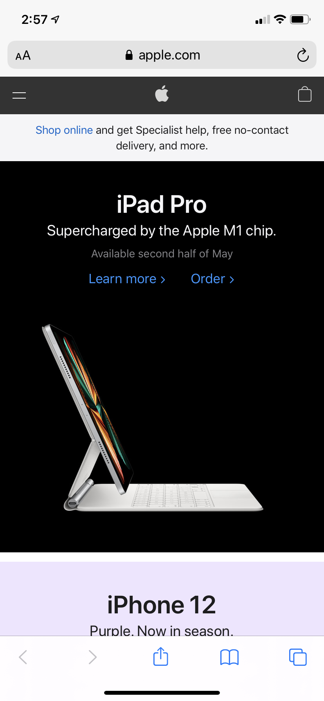

White Space and Clean Design
Apple
The reason why I chose this website for an example of White space and Clean design is because I believe that Apple's website is very simple and they do not try to be super fancy with what they show on their home page. There give everything space with the white space, and they do not overwhelm the user with too much information.
Alignment
The Church of Jesus Christ of Latter-Day Saints

This website uses alignment to place its links where they want, and make sure that they are alligned properly. The gaps help you to see that the alignment was done well, because each picture link lines up well with each other. They are vertically alligned well.
Fitt's Law
YouTube

YouTube is a prime example of a website that has to use Fitt's Law. YouTube plays videos and users will pause, play, like, dislike, and even skip videos. These buttons need to be accesible and easy for the user to navigate. The play and pause button would have to be the biggest and well placed button because it will be the most used. If these buttons are to hard to get to the whole website would not function well.